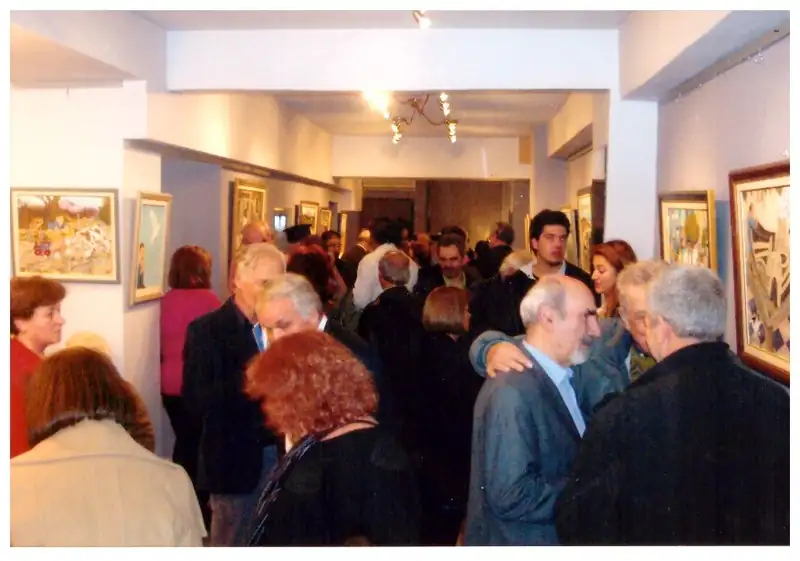
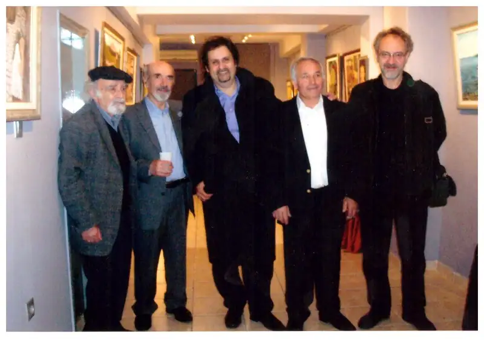

ΕΚΘΕΣΗ: ART KOLONAKI
Δεκέμβριος 2012 (3 - 10 Δεκεμβρίου)
ΘΕΜΑ: "Περί όνου σκιάς"

Οι υλοτόμοι και πιο πέρα οι καραβομαραγκοί. Ο πεταλωτής, ο τσαγκάρης, ο καλαθάς, ο καρεκλάς και αρκετοί άλλοι... είναι, μερικοί μόνο, από τους αφανισμένους πρωταγωνιστές, μαστόρους που στοιχειώνουν την συλλογική μας μνήμη.
Ο ζωγράφος Νώντας Ρεντζής, μέσα από τις νοσταλγικές καταγραφές της μνήμης, τους ανασύρει μαζί με το φυσικό τους περιβάλλον και δημιουργεί έργα που δεν έχουν ξαναεκτεθεί και το κοινό θα μπορέσει να απολαύσει στην gallery Art Kolonaki (Λυκαβητού 20) την εβδομάδα 3-10 Δεκεμβρίου.
Ο σύγχρονος λαϊκός ζωγράφος Νώντας Ρεντζής εκθέτει στη gallery Art Kolonaki, Λυκαβηττού 20, από 3 μέχρι 10 Δεκεμβρίου. Οι επισκέπτες της συλλογής με τον τίτλο "Περί όνου σκιάς" θα μεταφερθούν σε έναν καταποντισμένο κόσμο με διάχυτη νοσταλγία στοιχειώνει την συλλογική μας μνήμη, την εποχή που ο τόπος μας ήταν παρθένος και ανέπαφος από τα σημερινά του προβλήματα. Ο ίδιος ο Νώντας που ζωγραφίζει στην ωριμότητα του από την ανάγκη να ιστορήσει την εποχή του, όπως και οι γνωστότεροι ναϊφ, ανέπαφος από μοντερνισμούς, μας ξεναγεί και μας μαγεύει με την χάρη και την ποίηση του χρωστήρα του στον τρόπο ζωής και τις πρακτικές που μας έφεραν μέχρι εδώ. Η ελληνική φύση αδιαχώριστη από τους ξωμάχους και τους επαγγελματίες της προηγούμενης γενιάς, γνώριμη όσο και ξεχασμένη, μνημονεύεται και μας ξαναμιλάει για τον πόθο και την αγάπη για την ζωή και την ζωγραφική.

